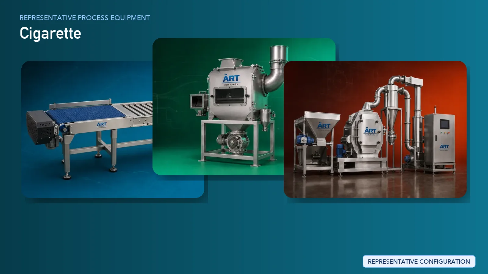

Cigarette Manufacturing Plant Machinery & Processing Solutions
Cigarette manufacturing is a highly automated and precision-driven industrial process that involves tobacco preparation, cigarette forming, filter attachment, and high-speed packaging. Ensuring consistency, efficiency, and process reliability is critical in large-scale production environments.

About Cigarette processing
ART Mechatronics provides complete engineering solutions for cigarette manufacturing plants, covering tobacco processing, material handling, dust control, and integration with high-speed cigarette making and packing systems. Our solutions are designed for continuous operation, precision control, and industrial-scale performance.
Complete Cigarette Manufacturing Process Flow
Processed or semi-processed tobacco is received and conveyed into the production line.
Tobacco is cleaned to remove impurities and fine dust.
Tobacco is conditioned to achieve optimal moisture levels for further processing.
Tobacco is cut into uniform strips suitable for cigarette production.
Different tobacco grades are blended to achieve consistent characteristics.
Tobacco is dried or stabilized to maintain consistent moisture.
Processed tobacco is fed into high-speed cigarette making machines where cigarettes are formed and wrapped in paper.
Performs:
- Tobacco feeding
- Rod formation
- Paper wrapping
- Continuous production
Filters are attached to cigarette rods to complete the product.
Ensures precise alignment and strong bonding.
Finished cigarettes are packed into packets and cartons.
Enables high-speed retail-ready packaging.
Fine tobacco dust is controlled to maintain safety and efficiency. Systems Used:
Processed materials are transferred automatically across different stages.
Ensures consistency in size, weight, and quality.
Machinery Required for Cigarette Manufacturing Plant
- Material Handling Systems
- Pre Cleaner
- Air Classifier
- Cyclone Separator
- Conditioning System
- Tobacco Cutting Machine
- Blending Equipment
- Dryer
- Cigarette Making Machine
- Filter Rod Attachment Machine
- Cigarette Packing Machine
- Cartoning & Overwrapping Machines
- Dust Collection System
- Pneumatic Conveying System
- Inspection Systems
Turnkey Cigarette Plant Solutions
ART Mechatronics provides complete turnkey engineering solutions, including:
- Process design & plant layout
- Tobacco processing systems
- Integration with cigarette making & packing lines
- Dust control & air handling systems
- Automation & control panels
- Installation & commissioning
- After-sales support
We customize solutions based on:
- Production capacity
- Automation level
- Plant layout
- Integration requirements
Why Choose Art Mechatronics
- Expertise in tobacco processing systems
- Integration capability with high-speed cigarette lines
- Advanced dust control and safety systems
- Precision engineering and automation
- Global export capability
- Reliable after-sales support
Machinery in a Cigarette plant
Where it's used
Get pricing & specs for the Cigarette plant
Share the product, target capacity, current process and plant location. These details help our engineers discuss the right machine or line configuration.
One partner, from design to start-up
ART Mechatronics designs, manufactures, installs and commissions your Cigarette solution with regional presence in India, UAE and Thailand.